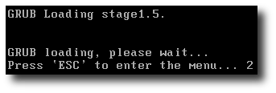
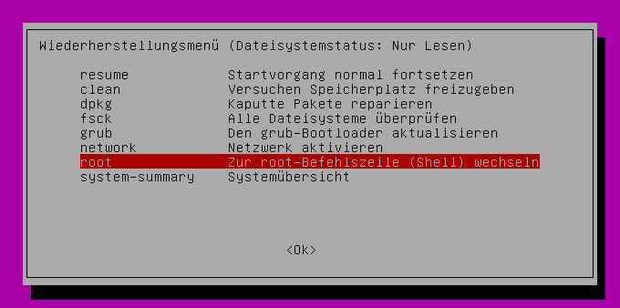

Wiki
Mitmachen
- Wikiartikel anlegen
- Howto anlegen
- Wiki-Referenz
- Wiki-Syntax
- Baustellen
- Artikelideen
- Ungetestete Artikel
- Ausbaufähige Artikel
- Fehlerhafte Artikel
- Rund ums Wiki
Konfiguration
- Backlinks anzeigen
- Exportieren
Recovery-Modus
Dieser Artikel wurde für die folgenden Ubuntu-Versionen getestet:
Dieser Artikel ist größtenteils für alle Ubuntu-Versionen gültig.
Zum Verständnis dieses Artikels sind folgende Seiten hilfreich:
Ubuntu legt für Notfälle einen Wiederherstellungsmodus (Recovery-Modus) zu jedem Kernel im Bootmanager an. Dieser Modus startet keine graphische Oberfläche, und man landet in einer Root-Shell, in der man alle Benutzerrechte besitzt. Dadurch ist es möglich, auch ein sehr stark verkonfiguriertes System wieder lauffähig zu machen. Da keine graphische Oberfläche zur Verfügung steht, sind Grundkenntnisse in der Bedienung der Shell [1] notwendig.
In den Recovery-Modus booten¶
Ist Ubuntu das einzige Betriebssystem auf dem Rechner, so erscheint beim Start für kurze Zeit folgende Meldung:  Hält man während dieser Anzeige die ⇧ -Taste (Shift bzw. Groß) oder, je nach Gerät,
die Esc -Taste gedrückt, so gelangt man in das Menü des Bootmanagers GRUB 2.
Hinweis:
Auf manchen Systemen kann der Bildschirm zu diesem frühen Zeitpunkt noch kein Bild anzeigen.
Hier gilt es, im richtigen Moment die ⇧ (oder Esc ) -Taste "blind" zu drücken.
Dieser Zwischenschritt ist nicht auf Rechnern erforderlich, auf denen mehrere Betriebssysteme installiert sind. Hier wird das GRUB-Menü direkt angezeigt. Für jeden installierten Kernel ist der dazugehörige Recovery-Modus aufgelistet. Beispiel:
Ubuntu, kernel 2.6.15-25-386 Ubuntu, kernel 2.6.15-25-386 (recovery mode)
friendly recovery¶
Im Wiederherstellungsmodus erscheint ein Menü, in dem verschiedene Auswahlmöglichkeiten getroffen werden können. Je nach Ubuntu-Version gibt es verschiedene Varianten.
Ab Ubuntu 12.04¶

Aktuelles Menü in Ubuntu 17.10:
| Auswahlmöglichkeiten im Recovery-Modus | |
| Option | Bemerkung |
| resume | Startvorgang normal fortsetzen |
| clean | Versucht Speicherplatz freizugeben |
| dpkg | Versucht die Paketverwaltung zu reparieren |
| failsafeX | Im abgesicherten Grafikmodus starten |
| fsck | Alle Partitionen überprüfen, kehrt in den read-only-Modus zurück |
| grub | Den grub-Bootloader aktualisieren |
| root | Stellt eine Root-Shell im read-only-Modus bereit. |
| system-summary | Systemübersicht |
| Strg + D | Wechselt von der Root-Shell in das Recovery-Menü zurück. |
Hinweis:
Will man die Root-Shell nutzen, um Änderungen an Dateien vorzunehmen, muss man das Dateisystem mit Schreibrechten neu aktivieren (remount):
mount -o remount,rw /
Deaktivieren¶
Will man das "friendly-recovery" vorübergehend ausschalten, um gleich in eine Root-Shell zu gelangen, so kann man folgenden Befehl in einem Terminal [1] eingeben:
sudo chmod -x /lib/recovery-mode/recovery-menu
Alternativ kann man das Menü auch deinstallieren:
sudo apt-get purge friendly-recovery
Eine Internetverbindung herstellen¶
Hinweis:
Für die Herstellung einer Internetverbindung ist es nicht nötig, das Dateisystem mit Schreibzugriff eingebunden zu haben. Allerdings können ohne Schreibzugriff keine Dateien gespeichert werden, was für das Herunterladen von Dateien notwendig ist. Um das Dateisystem mit Schreibrechten neu einzubinden, führt man folgenden Befehl aus:
mount -o remount,rw /
LAN / dLAN¶
Um eine bestehende LAN- oder dLAN-Verbindung nutzen zu können, muss man sich mit folgendem Befehl eine IP-Adresse per DHCP vom Router zuweisen lassen:
dhclient eth0
WLAN¶
Zu WLAN-Netzwerken, die über das Netzwerkmenü von Unity oder GNOME konfiguriert wurden, und die "für alle Benutzer verfügbar" sind (Standardeinstellung), verbindet sich das System automatisch, sobald der NetworkManager gestartet ist.
D-Bus starten (wird von NetworkManager benötigt):
start dbus
NetworkManager starten:
start network-manager
Um zu prüfen, ob die Verbindung erfolgreich hergestellt wurde, führt man folgenden Befehl aus:
nm-online
Beendet sich das Programm sofort ohne Ausgabe, steht die Verbindung. Wenn noch keine Verbindung steht, bekommt man einen Countdown zu sehen. Unterbricht dieser, heißt das, dass die Verbindung hergestellt wurde.
Danach sollte noch geprüft werden, ob über das WLAN-Netzwerk eine Verbindung zum Internet besteht.
ping -c 3 8.8.8.8 | grep "packet loss"
Bei einer bestehenden Verbindung sollte die Ausgabe ungefähr so aussehen:
4 packets transmitted, 4 received, 0% packet loss, time 3004ms
Den Recovery-Modus beenden¶
Hat man alle nötigen Arbeiten im Recovery-Modus erledigt, so kann man mit
exit
den Recovery Modus beenden. Im Anschluss daran bootet der Rechner weiter, und man gelangt wieder in die graphische Oberfläche. Falls der Rechner einfach neu gestartet werden soll, so kann man dies mit dem Befehl
reboot
veranlassen oder mit
poweroff
den Rechner abschalten.
Recovery-Modus GRUB-Legacy aktivieren¶
Hinweis:
Dieser Abschnitt richtet sich an Benutzer anderer Distributionen. Unter Ubuntu wird seit längerem der Nachfolger GRUB 2 verwendet.
Besitzt man einen Rechner mit mehreren Betriebssystemen und nutzt z.B. den Bootmanager GRUB einer anderen Linuxdistribution, so muss man die Einträge von Hand hinzufügen (Editor mit Root-Rechten erforderlich [2]). Die entsprechenden Einträge in der menu.lst sehen dann so aus:
title Ubuntu, kernel 2.6.15-25-386 root (hd0,0) kernel /boot/vmlinuz-2.6.15-25-386 root=/dev/sda1 ro quiet splash initrd /boot/initrd.img-2.6.15-25-386 savedefault boot title Ubuntu, kernel 2.6.15-25-386 (recovery mode) root (hd0,0) kernel /boot/vmlinuz-2.6.15-25-386 root=/dev/sda1 ro single initrd /boot/initrd.img-2.6.15-25-386 boot
wobei natürlich die Festplattenangabe (hd0,0) und /dev/sda1, sowie der Kernel den eigenen Gegebenheiten angepasst werden muss. Der Recovery-Modus wird durch die Kernel-Option single aktiviert.
Den Recovery-Modus schützen¶
Ein Merkmal des Recovery-Modus ist, dass jeder Benutzer, der diesen Eintrag bootet, automatisch als root angemeldet wird. Um das zu verhindern, kann man den GRUB-Eintrag schützen. Um abzuschätzen, wie sinnvoll das ist, sollte man vorher unbedingt den Artikel Lokale Sicherheit lesen.
Maßnahmen Grub-Legacy¶
Zuerst sollte man eine Sicherung der GRUB-Datei /boot/grub/menu.lst anlegen. Danach führt man den Befehl
grub-md5-crypt
aus [1] und gibt zweimal das Passwort ein, welches man zur Absicherung des Systems benutzen will. Als Ausgabe erhält man dann eine Zeichenkette der Art
$1$uLyZe1$/ubvZMguc9Zy0vVE1sHUK.
Jetzt öffnet man die Datei /boot/grub/menu.lst in einem Editor mit Root-Rechten [2] und fügt hinter den Block
## password ['--md5'] passwd # If used in the first section of a menu file, disable all interactive editing # control (menu entry editor and command-line) and entries protected by the # command 'lock' # e.g. password topsecret # password --md5 $1$gLhU0/$aW78kHK1QfV3P2b2znUoe/ # password topsecret
die Zeile
password --md5 VerschlüsseltesPasswort
ein, wobei VerschlüsseltesPasswort die generierte Ausgabe von oben ist.
Nun sucht man die Zeile
# lockalternative=false
und ändert sie in
# lockalternative=true
Nach dem Abspeichern muss man die Änderungen mit dem Befehl
sudo update-grub
übernehmen.
Wenn man nun die Recovery-Modus im Bootmenü auswählt oder versucht, per E die Befehlszeile zu editieren, wird man nach dem vorher vergebenen Passwort gefragt.
Maßnahmen GRUB 2¶
Vergleichbare Einstellungen sind auch mit dem Bootmanager GRUB 2, der als Standard ab Ubuntu 9.10 eingesetzt wird, einstellbar. Weitere Informationen unter GRUB 2 - Grub-Menü absichern.
Weitere Informationen im Wiki zu GRUB¶
GRUB 2 - GRUB in der zweiten Generation (ab Ubuntu 9.10)
GRUB - Grand Unified Boot Loader (bis Ubuntu 9.04)
menu.lst - Die GRUB-Konfigurationsdatei erklärt
Links¶
apt-get - Kernel, Software, Aktualisierungen sowie Grafiktreiber im Recovery-Modus (de-)installieren
Diese Revision wurde am 8. Oktober 2017 22:55 von XM-Franz erstellt.
- Erstellt mit Inyoka
-
 2004 – 2017 ubuntuusers.de • Einige Rechte vorbehalten
2004 – 2017 ubuntuusers.de • Einige Rechte vorbehalten
Lizenz • Kontakt • Datenschutz • Impressum • Serverstatus -
Serverhousing gespendet von